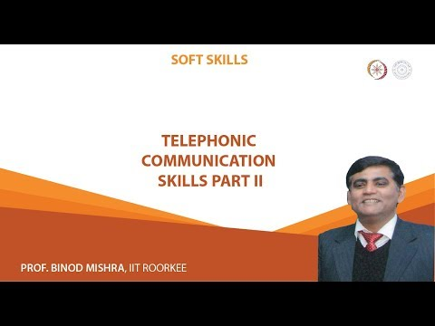
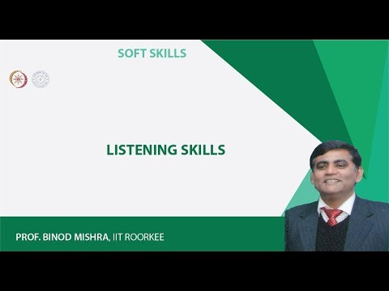
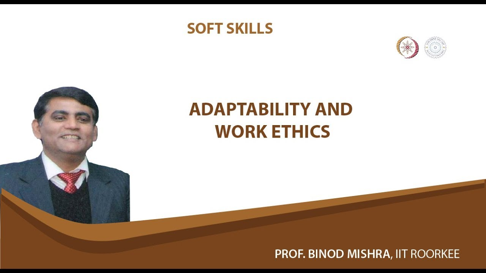

Dr. Binod Mishra
An expert in communication skills adeptly navigates online platforms, seamlessly blending clarity, empathy, and persuasion to engage diverse audiences. Through their guidance, they foster meaningful connections, facilitate productive discussions, and inspire action in virtual environments. Their proficiency in conveying ideas effectively transcends digital barriers, ensuring impactful communication across digital channels. With their expertise, they empower individuals to harness the power of online communication to achieve their goals and build strong online communities.

Dr. Binod Mishra
A master of listening skills on online platforms, this individual possesses a profound ability to tune into nuances of virtual conversations, fostering deep understanding and empathy. Their guidance transcends digital barriers, creating a space where every voice is heard and valued, enhancing virtual collaboration and cohesion. Through active listening and insightful feedback, they cultivate trust and rapport, empowering participants to express themselves authentically. Their expertise enriches online interactions, driving meaningful connections and facilitating constructive dialogue in virtual spaces.
Dr. Binod Mishra
An expert in negotiation skills thrives in the digital realm, adeptly navigating virtual discussions to achieve mutually beneficial outcomes. Their guidance on online platforms is characterized by strategic thinking, adaptability, and persuasive communication. Leveraging technology to their advantage, they facilitate negotiations with finesse, ensuring clarity and fairness in virtual exchanges. With their expertise, they empower participants to overcome challenges, find common ground, and reach successful agreements in the dynamic landscape of online negotiations.

Dr. Binod Mishra
An expert in adaptivity and work ethics guides individuals through online platforms with a blend of flexibility and integrity, adapting seamlessly to ever-changing digital landscapes while upholding ethical standards. They lead by example, demonstrating a commitment to honesty, respect, and professionalism in all virtual interactions. With their guidance, they empower others to navigate challenges, embrace change, and maintain high standards of conduct in the online realm. Their expertise fosters a culture of adaptability and ethical behavior, driving success and trust in virtual collaborations.